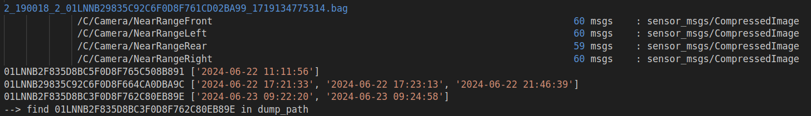
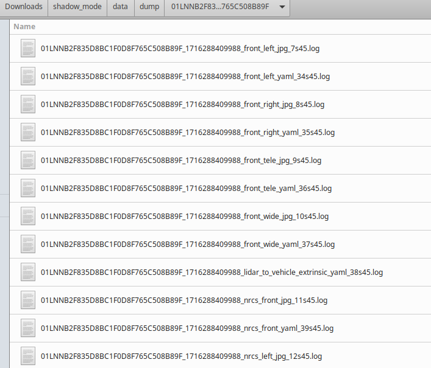
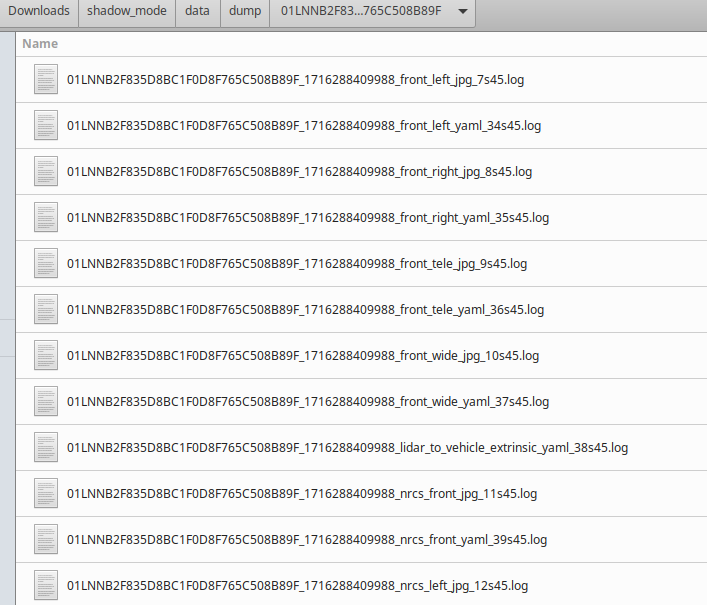

20240628_nrcs_bev_tools.tar.gz tool collection
Functional Overview
Shadow_mode data pre -processing (whether the check packet is valid, search DUMP data according to VIN, statistics of the time stamp information of multiple data packets in the same car, and calibration parameter query results)
Extract the original image and calibration parameter from Rosbag
Based on the timestamp of the front -view camera, synchronize the 4 -way surround camera image to generate effective frames (record the original timestamp and difference, and check whether the splicing effect is not good due to different splicing effects)
Generate BEV stitching related files according to the calibration parameter
Batch bev stitching
Step 1: Data pre -processing (only for Shadow Mode data)
Extract the VIN code and timestamp information of the vehicle in the packet, check the completeness of the required ROSTOPIC, screen the valid data
/A/ARA_COM_Gateway (_SLAVE)/Sensor_CALIB_PARAMETER_SENDERPORT → calibrate parameters
/C/Camera/Nearrangefront → The original image of the camera
/C/Camera/Nearrangerear → Later View of the camera original image
/C/Camera/Nearrangeleft → Left Ripid Camera Primitive Image
/C/Camera/Nearrangeright → Right -view camera original image
At present, all data packets lack calibration parameters. The temporary solution is to find from DUMP data (creating a raw_data subfolder under the DUMP folder, and the original data of the cloud after decompression is stored.
Shadow Mode data address
\\bosch.com \ DFSRB \ DFSCN \ DIV \ XC \ Engineering \ Domain \ Wave3 \ \ 00_DataExchange \ Shadowmode \ 20240624 → Parking's visual camera image recorded
\\bosch.com \ DFSRB \ DFSCN \ DIV \ XC \ Engineering \ Domain \ Wave3 \ 00_DataExchange2 \ shadowmode \ jpg.zip → production line or after -sales DUMP data (including original sensor data and standard files)
\\bosch.com \ DFSRB \ DFSCN \ DIV \ XC \ Engineering \ Domain \ Wave3 \ \ 00_DataExchange \ Shadowmode \ CALI_DUMP → Production line or after -sales DUMP data (only defined files)
Python is waiting to be perfected: The same car may go through multiple production lines and after -sales calibration. At present, it is a new calibration parameter. The correct approach should be the calibration parameter that comes with the data packet (no recording at present)
python3 handel_shadow_mode_data.py -p data_path -d dump_path -o output_path
-P / data_path: shadow_mode data path
-d / output_path: parsing data output path
-O / dump_path: Dump data path
import reimport osimport gzipimport shutilimport argparseimport subprocessfrom datetime import datetimedef check_rostopic(data_path): # -- TODO: return false for root, _, files in os.walk(data_path): for file in files: if file.endswith(".bag"): bag_path = os.path.join(root, file) print(f"\n{file}") try: info_output = subprocess.check_output(['rosbag', 'info', bag_path], stderr=subprocess.STDOUT, text=True) nrcs_info = [] calib_info = [] for line in info_output.split('\n'): if '/C/Camera/NearRange' in line: nrcs_info.append(line) if 'sensor_calib_parameter_senderport' in line: calib_info.append(line) if nrcs_info: for info in nrcs_info: print(info) if calib_info: for info in calib_info: print(info) except subprocess.CalledProcessError as e: print(f"fail to run rosbag info: {bag_path} -> {e.output}") def convert_filename(filename): if filename.endswith('_yaml'): return filename.replace('_yaml', '.yaml') elif filename.endswith('_jpg'): return filename.replace('_jpg', '.jpg') elif filename.endswith('_txt'): return filename.replace('_txt', '.txt') else: return filename def find_offline_calib(data_path, dump_path, output_path): os.makedirs(output_path, exist_ok=True) vin_timestamp_map = {} for filename in os.listdir(data_path): if filename.endswith('.bag'): parts = os.path.splitext(filename)[0].split('_') if len(parts) >= 5: vin = parts[3] timestamp = parts[4] if vin not in vin_timestamp_map: vin_timestamp_map[vin] = [] vin_timestamp_map[vin].append(timestamp) keywords = ['nrcs_front_yaml', 'nrcs_rear_yaml', 'nrcs_left_yaml', 'nrcs_right_yaml', 'nrcs_front_jpg', 'nrcs_rear_jpg', 'nrcs_left_jpg', 'nrcs_right_jpg', #'cam_0_txt', 'cam_1_txt', 'cam_2_txt', 'cam_3_txt', 'extrinsics_txt' ] for vin, timestamps in vin_timestamp_map.items(): timestamps_datetime = [datetime.fromtimestamp(int(ts) / 1000).strftime('%Y-%m-%d %H:%M:%S') for ts in timestamps] print(f'{vin} {sorted(timestamps_datetime)}') vin_directory = os.path.join(dump_path, vin) if not os.path.exists(vin_directory): os.makedirs(vin_directory) for root, _, files in os.walk(os.path.join(dump_path, 'raw_data')): for file in files: if vin in file and file.endswith('.gz'): gz_file_path = os.path.join(root, file) with gzip.open(gz_file_path, 'rb') as f_in: with open(os.path.join(vin_directory, file[:-3]), 'wb') as f_out: shutil.copyfileobj(f_in, f_out) elif vin in file: shutil.copy(os.path.join(root, file), vin_directory) # -- remove empty vin_directory if os.path.exists(vin_directory) and not os.listdir(vin_directory): os.rmdir(vin_directory) # -- copy image and yaml generate by offline calib bev_path = os.path.join(output_path, vin, 'bev') if [f for f in os.listdir(dump_path) if vin in f]: print(f'--> find {vin} in dump_path') os.makedirs(bev_path, exist_ok=True) latest_files = {keyword: {'path': None, 'timestamp': 0} for keyword in keywords} for root, _, files in os.walk(os.path.join(dump_path, vin)): for file in files: for keyword in keywords: if keyword in file: match = re.compile(r'_(\d+)_').search(file) if match: timestamp = int(match.group(1)) if timestamp > latest_files[keyword]['timestamp']: latest_files[keyword]['timestamp'] = timestamp latest_files[keyword]['path'] = os.path.join(root, file) for keyword, info in latest_files.items(): if info['path']: shutil.copy(info['path'], os.path.join(output_path, vin, 'bev', convert_filename(keyword))) def main(): parser = argparse.ArgumentParser() parser.add_argument('-p', '--data_path', required=True, type=str) parser.add_argument('-d', '--dump_path', required=True, type=str) parser.add_argument('-o', '--output_path', required=True, type=str) args = parser.parse_args() data_path = args.data_path check_rostopic(data_path) find_offline_calib(data_path, args.dump_path, args.output_path)if __name__ == "__main__": main()Example of processing results
Rostopic information of each data package
The same car will record multiple data packets, record the timestamp information and transform into a readable mode
→ Find Vin in DUMP_PATH indicates that the production line or after -sales calibration parameters of this car can be found, and you cannot find it temporarily

Search the calibration data from the DUMP data according to the VIN code, extract and convert it into a standard format
 

Step 2: Extract the environmental camera image and calibration parameter from ROSBAG
A single data: python3 extract_data_from_rosbag.py -r bag_file -o output_path
-R / BAG_FILE: Rosbag file path to be resolved
-O / output_path: parsing data output path
Batch processing: find rosbag_path -type f -name '*.bag' | xargs -I {} sh -c 'python3 extract_data_from_rosbag.py -r {} -o output_path'
ROSBAG_PATH: Multiple ROSBAG folder paths to be parsed
-O / output_path: The data output path after parsing will be stored separately according to the ROSBAG name
python to be perfect: At present, the calibration parameters are not available, and it has not been tested yet
import osimport cv2import rosbagimport argparseimport numpy as npfrom pathlib import Pathfrom cv_bridge import CvBridgeIMAGE_WIDTH = 1920IMAGE_HEIGHT = 1536def get_sensor_calib_parameter(topic_dir, message): sensor_ids = [ "SI_NOT_SUPPORT", "SI_IMU", "SI_FRONT_LIDAR", "SI_LEFT_LIDAR", "SI_RIGHT_LIDAR", "SI_SIDE_VIEW_CAMERA_FRONT_TELE", "SI_SIDE_VIEW_CAMERA_FRONT_WIDE", "SI_SIDE_VIEW_CAMERA_FRONT_LEFT", "SI_SIDE_VIEW_CAMERA_FRONT_RIGHT", "SI_SIDE_VIEW_CAMERA_REAR_LEFT", "SI_SIDE_VIEW_CAMERA_REAR_RIGHT", "SI_SIDE_VIEW_CAMERA_REAR", "SI_SURROUND_VIEW_CAMERA_FRONT", "SI_SURROUND_VIEW_CAMERA_REAR", "SI_SURROUND_VIEW_CAMERA_LEFT", "SI_SURROUND_VIEW_CAMERA_RIGHT", ] nrcs_map = { "SI_SURROUND_VIEW_CAMERA_FRONT": "nrcs_front.yaml", "SI_SURROUND_VIEW_CAMERA_REAR": "nrcs_rear.yaml", "SI_SURROUND_VIEW_CAMERA_LEFT": "nrcs_left.yaml", "SI_SURROUND_VIEW_CAMERA_RIGHT": "nrcs_right.yaml" } fs = { key: cv2.FileStorage(os.path.join(topic_dir, nrcs_map[key]), cv2.FILE_STORAGE_WRITE) for key in nrcs_map } try: for index, sensor_id in enumerate(message.sensorxxtrinsic_sensor_ids): sensor_name = sensor_ids[sensor_id] sensor_intrinsic = message.sensorxxtrinsic_sensor_intrinsics[index] sensor_extrinsic = message.sensorxxtrinsic_sensor_extrinsics[index] if sensor_name in fs: camera_name = "nrcs_" + sensor_name.split('_')[-1].lower() poly_param = {f"p{i}": sensor_intrinsic.cameraintrinsic_parameters[i + 3] for i in range(5)} inv_poly_param = {f"p{i}": sensor_intrinsic.cameraintrinsic_parameters[i + 8] for i in range(20)} affine_param = { "ac": sensor_intrinsic.cameraintrinsic_parameters[0], "ad": sensor_intrinsic.cameraintrinsic_parameters[1], "ae": sensor_intrinsic.cameraintrinsic_parameters[2], "cx": sensor_intrinsic.cameraintrinsic_cx, "cy": sensor_intrinsic.cameraintrinsic_cy } extrinsic_transform = np.array(sensor_extrinsic.sensorextrinsic_transform).reshape(4, 4) try: fs.write("model_type", "SCARAMUZZA") fs.write("camera_name", camera_name) fs.write("image_width", sensor_intrinsic.cameraintrinsic_width) fs.write("image_height", sensor_intrinsic.cameraintrinsic_height) fs.startWriteStruct("poly_parameters", cv2.FileNode_MAP) for key, value in poly_param.items(): fs.write(key, value) fs.endWriteStruct() fs.startWriteStruct("inv_poly_parameters", cv2.FileNode_MAP) for key, value in inv_poly_param.items(): fs.write(key, value) fs.endWriteStruct() fs.startWriteStruct("affine_parameters", cv2.FileNode_MAP) for key, value in affine_param.items(): fs.write(key, value) fs.endWriteStruct() fs.write("T_v_c", np.array(extrinsic_transform).reshape(4, 4)) fs.write("comment",topic_dir) except Exception as e: print(f"[ERROR] fail to write sensor_calib_parameter: {e}") finally: for fs in fs.values(): fs.release()def get_nrcs_image(topic_dir, message, timestamp): img = None if message._type == "sensor_msgs/CompressedImage": bridge = CvBridge() img = bridge.compressed_imgmsg_to_cv2(message, "bgr8") elif message._type == "raloctld/CameraImage": image_np = np.frombuffer(message.imageData, np.uint8) img = cv2.imdecode(image_np, cv2.IMREAD_COLOR) else: raise SystemExit img_resize = cv2.resize(img, (IMAGE_WIDTH, IMAGE_HEIGHT)) cv2.imwrite(os.path.join(topic_dir, str(timestamp) + ".jpg"), img_resize) def main(rosbag_file, output_path): with rosbag.Bag(rosbag_file, 'r') as bag: topics = bag.get_type_and_topic_info()[1].keys() nrcs_rostopic = [topic.split('/')[-1].split('NearRange')[-1] for topic in topics if topic.startswith('/C/Camera/NearRange')] print(f'nrcs_rostopic: {nrcs_rostopic}') for camera in ['Front', 'Rear', 'Left', 'Right']: if camera not in nrcs_rostopic: img_black = np.zeros((IMAGE_WIDTH, IMAGE_HEIGHT, 3), dtype=np.uint8) cv2.imwrite(os.path.join(output_path, f'nrcs_{camera.lower()}.jpg'), img_black) bag = rosbag.Bag(rosbag_file) topics = [ "/C/Camera/NearRangeFront", "/C/Camera/NearRangeLeft", "/C/Camera/NearRangeRear", "/C/Camera/NearRangeRight", #"/A/ara_com_gateway/sensor_calib_parameter_senderport", #"/A/ara_com_gateway_slave/sensor_calib_parameter_senderport", #"/A/ara_com_gateway/online_sensor_calib_parameter_senderport", ] try: for topic, message, timestamp in bag.read_messages(topics=topics): topic_dir = os.path.join(output_path, Path(rosbag_file).stem, topic.replace("/", "_")) os.makedirs(topic_dir, exist_ok=True) # -- TODO #if "sensor_calib_parameter_senderport" in topic: # get_sensor_calib_parameter(topic_dir, message) if "/C/Camera/NearRange" in topic: get_nrcs_image(topic_dir, message, timestamp) finally: bag.close()if __name__ == "__main__": parser = argparse.ArgumentParser() parser.add_argument('-r', '--rosbag_file', required=True, type=str) parser.add_argument('-o', '--output_path', required=True, type=str) args = parser.parse_args() main(args.rosbag_file, args.output_path)Step 3: Based on timestamp synchronization 4 -way environmental camera image
A single data:
python3 sync_parking_data_by_timestamp.py -d chery -i image_path -o output_path
-d / data_type: Data type chery/parking
-I / Image_path: The path where the original image is located (step 2 generation)
-O / output_path: parsing data output path
-t / TimestAmp_front: Optional parameters, if you choose manually, enter the timestamp of the front -view camera (image name, without suffix)
Batch processing: find image_path -mindepth 1 -maxdepth 1 -type d -exec python3 sync_parking_data_by_timestamp.py -d chery -i {} -o /home/fih1szh/Downloads/shadow_mode/data/output \;
image_path： The path of the original image of multiple cars
-d / data_type: Data type chery/parking
-O / OUTPUT_PATH: Analysis of data output paths, Will be stored separately by vin
Python is waiting to be perfected: At present, the image of the front vision camera is sorted by time stamp, and one quarter, one -half, and three -quarters of the 3 -frame data synchronize the other three -way cameras.good
import osimport reimport shutilimport argparsefrom pathlib import Pathdef extract_timestamps(directory): jpg_files = sorted(Path(directory).glob('*.jpg'), key=lambda x: int(x.stem)) if len(jpg_files) > 3: quarter_timestamp = int(jpg_files[len(jpg_files) // 4].stem) half_timestamp = int(jpg_files[len(jpg_files) // 2].stem) three_quarter_timestamp = int(jpg_files[3 * len(jpg_files) // 4].stem) return quarter_timestamp, half_timestamp, three_quarter_timestamp else: raise ValueError("[ERROR] fail to gernerate parking data")def find_nearest_image(directory, timestamp_front): nearest_file = None nearest_diff = float('inf') for file in os.listdir(directory): if file.endswith('.jpg'): timestamp_str = file.split('.jpg')[0] try: timestamp = float(timestamp_str) diff = abs(timestamp - timestamp_front) if diff < nearest_diff: nearest_diff = diff nearest_file = file except ValueError: continue return nearest_file, nearest_diffdef data_sync(data_type, image_path, timestamp_front, output_path): image_to_path = None if data_type == 'bosch': # -- parking data image_to_path = { "nrcs_front.jpg": "C/Camera/NearRangeFront", "nrcs_rear.jpg": "C/Camera/NearRangeRear", "nrcs_left.jpg": "C/Camera/NearRangeLeft", "nrcs_right.jpg": "C/Camera/NearRangeRight", } elif data_type == 'chery': # -- shadow_mode data image_to_path = { "nrcs_front.jpg": "_C_Camera_NearRangeFront", "nrcs_rear.jpg": "_C_Camera_NearRangeRear", "nrcs_left.jpg": "_C_Camera_NearRangeLeft", "nrcs_right.jpg": "_C_Camera_NearRangeRight", } else: return match = re.search(r'2_[^_]*_[^_]*_(\w+)_', image_path) if match: vin = match.group(1) print(f'generate parking data of {vin}') vin_path = Path(output_path) / vin if vin_path.exists() and vin_path.is_dir(): parking_path = vin_path / 'parking' parking_path.mkdir(parents=True, exist_ok=True) else: print(f"offline_calib of {vin} is not exist.") return front_timestamps = [] if not timestamp_front: if data_type == 'bosch': front_timestamps = extract_timestamps(Path(image_path) / "C/Camera/NearRangeFront") elif data_type == 'chery': front_timestamps = extract_timestamps(Path(image_path) / "_C_Camera_NearRangeFront") else: return else: front_timestamps.append(timestamp_front) for index, ft in enumerate(front_timestamps): parking_path = vin_path / f'parking/{index}' parking_path.mkdir(parents=True, exist_ok=True) log_file = parking_path / "image_timestamp.txt" with open(log_file, 'w') as log: for new_name, relative_path in image_to_path.items(): camera_dir = Path(image_path) / relative_path.lstrip('/') if new_name == "nrcs_front.jpg": src_file = camera_dir / f"{ft}.jpg" if src_file.exists(): shutil.copy2(src_file, parking_path / new_name) log.write(f"{src_file.name}\n") else: log.write(f"{src_file.name} not found\n") else: nearest_file, nearest_diff = find_nearest_image(camera_dir, float(ft)) if nearest_file: src_file = camera_dir / nearest_file shutil.copy2(src_file, parking_path / new_name) log.write(f"{nearest_file} diff:{nearest_diff / 1_000_000_000:.3f}(second)\n") else: log.write(f"not found\n")def main(): parser = argparse.ArgumentParser(description="generate parking data") parser.add_argument('-d', '--data_type', required=True, default='chery', type=str) parser.add_argument('-i', '--image_path', required=True, type=str) parser.add_argument('-t', '--timestamp_front', required=True, type=str) parser.add_argument('-o', '--output_path', required=True, type=str) args = parser.parse_args() data_sync(args.data_type, args.image_path, args.timestamp_front, args.output_path)if __name__ == "__main__": main()Example of processing results
The original timestamp and difference between the 4 -way fish eye camera image and the difference between the FRONT (If the stitching effect is not good, check whether it is caused by different splicing)

Step 4: Generate BEV stitching related files according to the calibration parameter
A single data:
python3 yaml_to_bev.py -y yaml_path
-y / yaml_path: The path of the yaml file is located (step -year generation)
Batch processing: find yaml_path -mindepth 1 -maxdepth 1 -type d | xargs -I {} sh -c 'python3 yaml_to_bev.py -y {}/bev'
yaml_path ： Multi -car yaml file Where the path is ， Will be stored separately by vin
import osimport reimport cv2import yamlimport argparseimport numpy as npdef check_files_exist(yaml_path): is_all_exist = True for file_name in ['nrcs_front.yaml', 'nrcs_right.yaml', 'nrcs_rear.yaml', 'nrcs_left.yaml']: file_path = os.path.join(yaml_path, file_name) if os.path.exists(file_path) is False: is_all_exist = False return is_all_existdef rename_files(yaml_path): pattern = re.compile(r'.*_nrcs_*_yaml_.*\.log$') files_rename = [] for root, _, files in os.walk(yaml_path): for file in files: if pattern.match(file): old_file_path = os.path.join(root, file) new_file_path = os.path.join(root, 'nrcs_front.yaml') try: os.rename(old_file_path, new_file_path) files_rename.append(new_file_path) print(f'rename: {old_file_path} -> {new_file_path}') except Exception as e: print(f'[ERROR] rename {old_file_path} to {new_file_path}: {e}') return files_renamedef generate_extrinsics_txt(yaml_path): first_flag = True for camera in ["front", "right", "rear", "left"]: file = os.path.join(yaml_path, f'nrcs_{camera}.yaml') fs = cv2.FileStorage(file, cv2.FILE_STORAGE_READ) if not fs.isOpened(): print(f"can not open {file}") exit(0) initial_extrinsic = fs.getNode("T_v_c").mat() if initial_extrinsic is None: print("lack extrinsic") exit(0) T_v_c = np.array(initial_extrinsic, dtype=np.float64) filename = os.path.join(yaml_path, 'extrinsics.txt') if first_flag: with open(filename, 'w') as outfile: outfile.write("CAM_NUM: 4\n") else: with open(filename, 'a') as outfile: pass world1_T_world2 = np.array([[-1, 0, 0, 0], [0, -1, 0, 0], [0, 0, 1, 0], [0, 0, 0, 1]], dtype=np.float64) eigen_T_c_v = np.linalg.inv(T_v_c) cam_T_world1 = eigen_T_c_v cam_T_world2 = cam_T_world1 @ world1_T_world2 cam_T_world2[0, 3] *= 1000.0 cam_T_world2[1, 3] *= 1000.0 cam_T_world2[2, 3] *= 1000.0 world2_T_cam = np.linalg.inv(cam_T_world2) with open(filename, 'a') as outfile: np.savetxt(outfile, cam_T_world2, fmt='%.5f', delimiter=' ') np.savetxt(outfile, world2_T_cam, fmt='%.5f', delimiter=' ') first_flag = Falsedef generate_cam_txt(yaml_path): for index, camera in enumerate(["front", "right", "rear", "left"]): with open(os.path.join(yaml_path, f'nrcs_{camera}.yaml'), 'r') as file: lines = file.readlines()[2:] split_index = next((i for i, line in enumerate(lines) if line.startswith('T_v_c: !!opencv-matrix')), len(lines)) data = yaml.safe_load(''.join(lines[:split_index])) image_width = data['image_width'] image_height = data['image_height'] poly_parameters = data['poly_parameters'] ss = f"{poly_parameters['p0']} {poly_parameters['p1']} {poly_parameters['p2']} {poly_parameters['p3']} {poly_parameters['p4']}" inv_poly_parameters = data['inv_poly_parameters'] ss_inv = " ".join(str(inv_poly_parameters[f'p{i}']) for i in range(14)) affine_parameters = data['affine_parameters'] cx = affine_parameters['cx'] cy = affine_parameters['cy'] c = affine_parameters['ac'] d = affine_parameters['ad'] e = affine_parameters['ae'] with open(os.path.join(yaml_path, f'cam_{index}.txt'), 'w') as file: file.write("Model: Ocam\n\n") file.write(f"width: {image_width}\n") file.write(f"height: {image_height}\n\n") file.write(f"ss: {ss}\n") file.write(f"ss_inv: {ss_inv}\n\n") file.write(f"cx: {cx}\n") file.write(f"cy: {cy}\n\n") file.write(f"c: {c}\n") file.write(f"d: {d}\n") file.write(f"e: {e}\n") def main(): parser = argparse.ArgumentParser(description="generate bev by yaml") parser.add_argument('-y', '--yaml_path', required=True, type=str) args = parser.parse_args() yaml_path = args.yaml_path if check_files_exist(yaml_path) is False: rename_files(yaml_path) if check_files_exist(yaml_path) is True: print('all nrcs_*.yaml is exist, generate bev ...') generate_extrinsics_txt(yaml_path) generate_cam_txt(yaml_path) else: print('[ERROR] fail to generate bev without all nrcs_*.yaml')if __name__ == '__main__': main()Example of processing results
Step 5: BEV stitching
Single data: python3 stitch_bev.py -s image_path -p bev_path/ -m 0
-s / image_path： Evalent camera image Location (Step 2 Generates)
-P / bev_path: The path of yaml file and bev parameter (Step 4 generation)
-m / stitch_mode： Specify Splicing method (0 is 0 degrees stitching, 1 It is 90 degrees stitching, 2 It is 180 degrees stitching ）
Batch processing: python3 batch_generate_bev.py -p data_path -t offline or python3 data_path -t parking -n 3
-P / Data_Path: The path of yaml file and bev parameters (Step 4 generation)
-t / type：offline/parking
-N / Parking_number: Frames ( Optional parameter ）， There is only one frame of data for production lines or after sale. No input is required (step -year generation)
import osimport shutilimport argparseimport subprocessdef main(): parser = argparse.ArgumentParser() parser.add_argument('-p', '--data_path', required=True, type=str) parser.add_argument('-t', '--data_type', required=True, default='offline', type=str) parser.add_argument('-n', '--parking_number', type=int) args = parser.parse_args() data_path = args.data_path command_template = "python3 stitch_bev.py -s {image_path} -p {bev_path} -m {mode}" for subdir in os.listdir(data_path): vin_path = os.path.join(data_path, subdir) bev_path = os.path.join(vin_path, 'bev/') check_bev_path = os.path.join(bev_path, 'check_bev') if args.data_type == 'parking': for p in range(args.parking_number): image_path = os.path.join(vin_path, f'parking/{p}/') for m in range(3): command = command_template.format(image_path=image_path, bev_path=bev_path, mode=m) subprocess.run(command, shell=True) src_file = os.path.join(check_bev_path, f"origin_bev_{m}.png") dst_file = os.path.join(vin_path, f"{subdir}_parking_{p}_{m}.png") shutil.copy(src_file, dst_file) elif args.data_type == 'offline': for m in range(3): command = command_template.format(image_path=bev_path, bev_path=bev_path, mode=m) subprocess.run(command, shell=True) src_file = os.path.join(check_bev_path, f"origin_bev_{m}.png") dst_file = os.path.join(vin_path, f"{subdir}_offline_{m}.png") shutil.copy(src_file, dst_file) else: print('just support parking or offline data') returnif __name__ == "__main__": main()Example of Processing Results
Other reference
1. Use Wavizzzz STUDIO to play ROSBAG and subscribe to the following topic
Select a frame of flat and rich texture in the/a/viper_parking/debug_stitched_img, right-click the download image, and it will be saved as a_viper_parking_debug_img-171877688887212505. PNG
Record/a/ARA_COM_GATAY_SLAVE/Sensor_CALIB_PARAMETERS_SENDERPORT
Sensorxxtrinsic_calib_info's Calibinfo_calib_module
12 (NRCS_FRONT) 13 (NRCS_REAR) 14 (NRCS_LEFT) 15 (NRCS_RIGHT) Cameraintrinsic_cx and Cameraintrinsic_Cy → Check whether the CX and CY of the surrounding camera are consistent to avoid inside and outside the camera. BEV stitching abnormal
2. Use RALOCTL to parse ROSBAG data, generate a surrounding camera image, install and use reference 09 Raloctl Release Notes